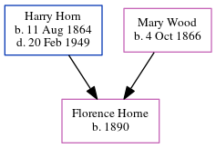

Florence A Horne 1890 -
[ Home ] | [ Calendar ] | [ Surnames Index ] | [ Census Index ] | [ Family History ]The child of Harry Horn (a constable metropolitan police officer) and Mary Wood, Florence Horne, the first cousin twice-removed on the father's side of Nigel Horne, was born in Enfield, London, England in 18901.
During her life, she was living at Bush Hill, Edmonton, London, England on Apr 5, 18911; and at 3 Jackson Road, Barnet, London on Mar 31, 19012.
Parents
- Harry was born on Aug 11, 1864
- Mary Jane was born on Oct 4, 1866
Citations
- 1891 England, Wales & Scotland Census - Findmypast (was age 1 and the daughter of the head of the household)
- 1901 England, Wales & Scotland Census - Findmypast (was age 10 and the daughter of the head of the household)
Family Tree
Generated by ged2site. Last updated on Jun 11, 2024